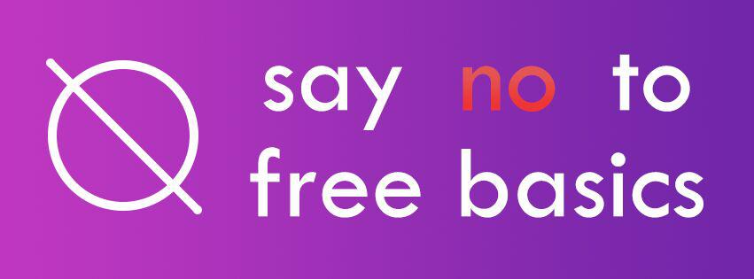

How Do We Shape Community?
Anna Neyzberg • @ANeyzb • anna@carbonfive.com
About me:
- I'm on of the ElixrBridge founders
- I almost went to medical school
- I am trying to get better at climbing rocks
What I want to talk about today?
Community
- Why is it important
- What to think about when creating community
- How to make it sustainable
Why is community important?

"We build better products with diverse teams"
photo credit: https://culclinc8.wordpress.com/2014/06/28/diverse-team-2/

credit: http://www.bbc.com/news/world-south-asia-12557384
Free basics was supposed to give internet access to people who couldn't afford it
Facebook got to choose what sites people could go to
Choice between no internet and free internet
- India's Railway site has 1.3 billion tickets booked per day
- Farmers access weather forecasts
- Women in remote villages get easy acess to feminie hygiene products
Free Basics was struck down by Indian court

"India’s rejection of Free Basics was as economically catastrophic to it as its independence from British colonisation."
- Facebook Board Member
Free Basics was never a true philanthropic effort
Facebook did not understand the true needs of the people it was trying to reach
So Why am I explaining all this?
What if the team building free basics was more diverse
What id they had created a platform that India people could use to innovate and solve their own problems
"Promoting diversity means promoting understanding"
"This leads to better products that solve problems for those who might’ve otherwise been sidelined."

credit: http://www.talentinnovation.org/assets/IDMG-ExecSummFINAL-CTI.pdf
credit: http://www.mckinsey.com/business-functions/organization/our-insights/why-diversity-matters
So we know diversity is important
Yet there is still a problem
Teach Leavers Study 2017
This brings us to ElixirBridge? (or an organization like it)

- What is ElixirBridge
- What motivated ElixirBrige
- What we have seen work so far
- Free 1.5 day long workshops to underrepresented populations in tech learn Elixir & Phoenix
- All volunteer run
Schedule
Friday night: InstallFest
Saturday: Workshop
- 9:30 - 10:00am: Sign in, coffee, breakfast
- 10:00 - 10:15am: Intro!
- 10:30 - 12:30pm: Session 1
- 12:30 - 1:30pm: Lunch!
- 1:30 - 4:00pm: Session 3
- 4:15 - 4:30pm: Retrospective
- 4:30 - 5pm: Happy Hour at TBD
How ElixirBridge got started
↓
What is RailsBridge?
- Started by Sarah Allen & Sarah Mei in 2009
- Free weekendlong workshops for women
- All volunteer run
- Helped Ruby community in SF go from 2% women to 18% women in 1 year
Current Status of ElixirBridge
- 5 Workshops in SF, NYC, and Seattle
What has worked for us in Building Community
Welcoming inclusive environment
- Code-of-Conduct
- Goals
- Rules
- Resources
- Accessibility
Code-of-Conduct
- https://bridgefoundry.org/code-of-conduct
- A harassment-free experience for everyone is essential
- Everyone has something to contribute.
- Anyone is welcome to replicate an event
"Everyone has limitied knowledge but inifinite potential"Clear Examples- Use your words and respect boundaries
- If you feel like it would help to work directly on someone’s keyboard, ask first.
- Refer participants to open and free material for follow-up learning.
- Do not ask anyone out on a date.
Grey Area- If you are not sure your behavior is appropriate. It probably isn't
- Each person you interact with gets to define what that line is
- Do not assume that your way of thinking is the norm
Goals- What is the mission
- who is the audience
- Break macro goals into micro ones
- Create specific pieces people can work on
RulesWhat rules do you need in place to functionexample: how do you respond to negative comments on a PR to the open source repoIf an organizers is being disruptive how is that dealt with?